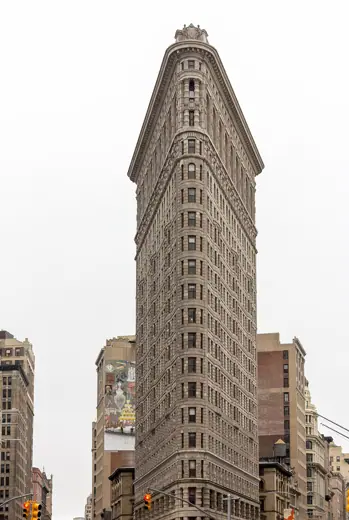
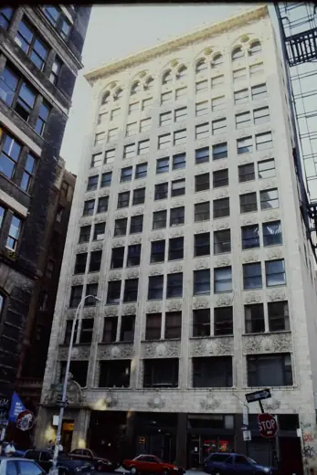
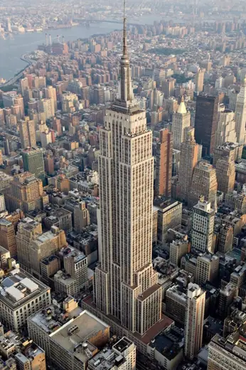

Buildings 48
Sort
 Solomon R. Guggenheim Museum1959 · New York
Solomon R. Guggenheim Museum1959 · New York MetLife Building1963 · New York
MetLife Building1963 · New York Ford Foundation Building1967 · New York
Ford Foundation Building1967 · New York Bank of America Tower2009 · New York
Bank of America Tower2009 · New York Jacob K. Javits Convention Center1986 · New York
Jacob K. Javits Convention Center1986 · New York 8 Spruce Street2011 · New York
8 Spruce Street2011 · New York United Nations Secretariat Building1952 · New York
United Nations Secretariat Building1952 · New York Campbell Sports Center2012 · New York
Campbell Sports Center2012 · New York Manhattan House1951 · New York
Manhattan House1951 · New York 140 Broadway1967 · New York
140 Broadway1967 · New York
Flatiron Building1902 · New York Seagram Building1958 · New York
Seagram Building1958 · New York New York Times Building2007 · New York
New York Times Building2007 · New York High Line2009 · New York
High Line2009 · New York Rockefeller Guest House1950 · New York
Rockefeller Guest House1950 · New York Via 57 West2016 · New York
Via 57 West2016 · New York Whitney Museum of American Art2015 · New York
Whitney Museum of American Art2015 · New York 4 World Trade Center2013 · New York
4 World Trade Center2013 · New York 53W532019 · New York
53W532019 · New York Radio City Music Hall1932 · New York
Radio City Music Hall1932 · New York
Bayard–Condict Building1899 · New York Franklin D. Roosevelt Four Freedoms Park2012 · New York
Franklin D. Roosevelt Four Freedoms Park2012 · New York
Empire State Building1931 · New York TWA Flight Center1962 · New York
TWA Flight Center1962 · New York Museum of Modern Art2004 · New York
Museum of Modern Art2004 · New York Chrysler Building1930 · New York
Chrysler Building1930 · New York Manufacturers Trust Company Building1954 · New York
Manufacturers Trust Company Building1954 · New York United Nations Headquarters1952 · New York
United Nations Headquarters1952 · New York AT&T Building (550 Madison Avenue)1984 · New York
AT&T Building (550 Madison Avenue)1984 · New York Lever House1952 · New York
Lever House1952 · New York Manhattan Municipal Building1914 · New York
Manhattan Municipal Building1914 · New York 41 Cooper Square2009 · New York
41 Cooper Square2009 · New York Woolworth Building1913 · New York
Woolworth Building1913 · New York W. R. Grace Building1972 · New York
W. R. Grace Building1972 · New York Brooklyn Museum1897 · New York
Brooklyn Museum1897 · New York Breuer Building1966 · New York
Breuer Building1966 · New York IAC Building2007 · New York
IAC Building2007 · New York 56 Leonard Street2017 · New York
56 Leonard Street2017 · New York Solow Building1974 · New York
Solow Building1974 · New York National September 11 Memorial2011 · New York
National September 11 Memorial2011 · New York One572014 · New York
One572014 · New York CBS Building1965 · New York
CBS Building1965 · New York New Museum2007 · New York
New Museum2007 · New York The Morgan Library & Museum1906 · New York
The Morgan Library & Museum1906 · New York Carnegie Hall1891 · New York
Carnegie Hall1891 · New York David H. Koch Theater1964 · New York
David H. Koch Theater1964 · New York Kips Bay Towers1965 · New York
Kips Bay Towers1965 · New York 2 Columbus Circle1964 · New York
2 Columbus Circle1964 · New York